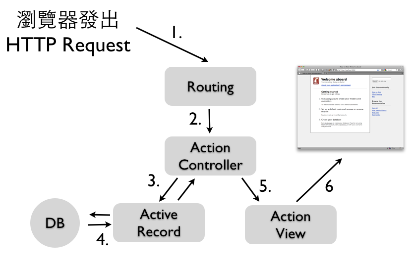
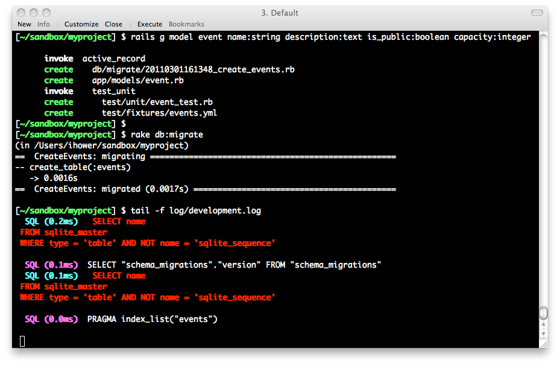

本書尚未完成，如果您有任何意見、鼓勵或勘誤，歡迎來信給我，謝謝。
初入門像Rails這樣的功能豐富的開發框架，難處就像雞生蛋、蛋生雞的問題：要了解運作的原理，你必須了解其中的元件，但是如果個別學習其中的元件，又將耗費許多的時間而見樹不見林。因此，為了能夠讓各位讀者能夠儘快建構出一個基本的應用程式，有個大局觀。我們將從一個CRUD程式開始。所謂的CRUD即為Create、Read、Update、Delete等四項基本資料庫操作，本章將示範如何做出這個基本的應用程式，以及幾項Rails常用功能。細節的原理說明則待Part 2後續章節。
我們在第一章Ruby on Rails簡介有介紹了什麼是MVC架構，而在Rails中分成幾個不同元件來對應：

這張圖示中的執行步驟是：
其中，路由主要是根據HTTP Method方法(GET、POST或是PUT、DELETE等)以及網址來決定派往到哪一個Controller的Action。例如，我們在「Rails起步走」一章中的get "welcome/say_hello" => "welcome#say"意思就是，將GET welcome/say_hello的這個HTTP request請求，派往到welcome controller的say action。
ActiveRecord是Rails的ORM(Object-relational mapping)元件，讓你可以使用物件導向語法來操作關聯式資料庫，它的對應概念如下：
第三章「Rails起步走」我們提到了Scaffold鷹架功能，有經驗的Rails程式設計師雖然不用鷹架產生程式碼，不過還是會使用Rails的generator功能來分別產生Model和Controller檔案。這裡讓我們來產生一個Model：
$ rails g model event name:string description:text is_public:boolean capacity:integer這些指令必須要在Rails專案目錄下執行，承第三章也就是demo目錄下。
接著執行以下指令就會建立資料表(如果是使用SQLite3資料庫話，會產生db/development.sqlite3這個檔案)：
$ bundle exec rake db:migrate 為了觀察ActiveRecord實際執行的SQL指令，讓我們另開一個指令視窗，在專案目錄下執行tail -f log/development.log

接著，讓我們使用rails console(可以簡寫為rails c) 進入主控台模式做練習：
# 新增
> event = Event.new
> event.name = "Ruby course"
> event.description = "fooobarrr"
> event.capacity = 20
> event.save # 儲存進資料庫，讀者可以觀察另一個指令視窗
> event.id # 輸出主鍵 1，在 Rails 中的主鍵皆為自動遞增的整數 ID
> event = Event.new( :name => "another ruby course", :capacity => 30)
> event.save
> event.id # 輸出主鍵 2，這是第二筆資料
# 查詢
> event = Event.where( :capacity => 20 ).first
> events = Event.where( ["capacity >= ?", 20 ] ).limit(3).order("id desc")
# 更新
> e = Event.find(1) # 找到主鍵為 1 的資料
> e.name # 輸出 Ruby course
> e.update_attributes( :name => 'abc', :is_public => false )
# 刪除
> e.destroy和irb一樣，要離開rails console請輸入exit。如果輸入的程式亂掉沒作用時，直接Ctrl+Z離開也沒關係。
Rails 3.1在rails console中就會輸出SQL訊息了，Rails 3.0中則可以輸入
ActiveRecord::Base.logger = Logger.new(STDOUT)將本來餵給development.log的訊息改成螢幕輸出。
Rails使用了Migration資料庫遷移機制來定義資料庫結構(Schema)，檔案位於db/migrate/目錄下。它的目的在於:
rake db:migrate在上一節產生Model程式時，Rails就會自動幫你產生對應的Migration檔案，也就是如db/migrate/20110519123430_create_events.rb的檔案。Rails會用時間戳章來命名檔案，所以每次產生檔名都不同，這樣可以避免多人開發時的衝突。其內容如下：
# db/migrate/20110519123430_create_events.rb
class CreateEvents < ActiveRecord::Migration
def change
create_table :events do |t|
t.string :name
t.text :description
t.boolen :is_public
t.integer :capacity
t.timestamps
end
end
end其中的create_table區塊就是定義資料表結構的程式。上一節中我們已經執行過bundle exec rake db:migrate來建立此資料表。
Migration檔案不需要和Model一一對應，像我們來新增一個Migration檔案來新增一個資料庫欄位，請執行:
$ rails g migration add_status_to_events如此就會產生一個空的 migration 檔案在 db/migrate 目錄下。Migration 有提供 API 讓我們可以變更資料庫結構。例如，我們可以新增一個欄位。輸入rails g migration add_status_to_events然後編輯這個Migration檔案：
# db/migrate/20110519123819_add_status_to_events.rb
class AddStatusToEvents < ActiveRecord::Migration
def change
add_column :events, :status, :string
end
end接著執行bundle exec rake db:migrate就會在events表格中新增一個status的欄位，欄位型別是string。Rails會記錄你已經對資料庫操作過哪些Migrations，像此例中就只會跑這個Migration而已，就算你多執行幾次bundle exec rake db:migrate也只會對資料庫操作一次。
Rails透過資料庫中的schema_migrations這張table來記錄已經跑過哪些Migrations。
ActiveRecord的資料驗證(Validation)功能，可以幫助我們檢查資料的正確性。如果驗證失敗，就會無法存進資料庫。
編輯app/models/event.rb加入
class Event < ActiveRecord::Base
validates_presence_of :name
end其中的validates_presence_of宣告了name這個屬性是必填。我們按Ctrl+Z離開主控台重新進入，或是輸入 reload!，這樣才會重新載入。
> e = Event.new
> e.save # 回傳 false
> e.errors.full_messages
> e.name = 'ihower'
> e.save
> e.errors.full_messages # 顯示驗證失敗的原因呼叫save時，ActiveRecord就會驗證資料的正確性。而這裡因為沒有填入name，所以回傳false表示儲存失敗。
我們在「Rails起步走」一章分別為welcome/say_hello和welcome設定路由，如果每個路徑都需要一條條設定會太麻煩了。這一章我們先使用Rails的典型路由，編輯config/routes.rb將最下方的此行註解打開：
match ':controller(/:action(/:id(.:format)))'典型路由很容易理解，它會將/foo/bar這樣的網址自動對應到Controller foo的bar Action。我們再下一章中我們會再改用另一種RESTful路由方式。
執行rails g controller events，編輯app/controllers/events_controller.rb加入
def index
@events = Event.all
endEvent.all會抓出所有的資料，回傳一個陣列給實例變數(instance variables)指派給@events。在Rails會讓Action裡的實例變數(也就是有@開頭的變數)通通傳到View樣板裡面可以使用。這個Action預設使用的樣板是app/views/events/目錄下與Action同名的檔案，也就是接下來要編輯的app/views/events/index.html.erb，內容如下:
<ul>
<% @events.each do |event| %>
<li>
<%= event.name %>
<%= link_to 'Show', :controller => 'events', :action => 'show', :id => event %>
<%= link_to 'Edit', :controller => 'events', :action => 'edit', :id => event %>
<%= link_to 'Delete', :controller => 'events', :action => 'destroy', :id => event %>
</li>
<% end %>
</ul>
<%= link_to 'New event', :controller => 'events', :action => 'new' %>這個View迭代了@events陣列並顯示內容跟超連結，有幾件值得注意的事情：
<%和<%=不太一樣，前者只執行不輸出，像用來迭代的each和end這兩行就不需要輸出。而後者<%= 裡的結果會輸出給瀏覽器。
link_to建立超連結到一個特定的位置，這裡為瀏覽、編輯和刪除都提供了超連結。
在Rails 3之前的版本，你必須使用
<%=h event.name %>如此HTML才會被逸出防止XSS網路攻擊。在Rails 3之後預設就會逸出。如果不要逸出，請使用<%= raw event.name %>或<%= event.name.html_safe! %>。網路安全一章有針對XSS進一步的說明。
連往http://localhost:3000/events就會看到這一頁。目前還沒有任何資料，讓我們繼續實作點擊New event超連結之後的動作。
建立一篇新的活動需要兩個Actions。第一個是new Action，它用來實例化一個空的Event物件，編輯app/controllers/events_controller.rb加入
def new
@event = Event.new
end這個app/views/events/new.html.erb會顯示空的Event給使用者：
<%= form_for @event, :url => { :controller => 'events', :action => 'create' } do |f| %>
<%= f.label :name, "Name" %>
<%= f.text_field :name %>
<%= f.label :description, "Description" %>
<%= f.text_area :description %>
<%= f.submit "Create" %>
<% end %>這個form_for的程式碼區塊(Code block)被用來建立HTML表單。在區塊中，你可以使用各種函式來建構表單。例如f.text_field :name建立出一個文字輸入框，並填入@event的name屬性資料。但這個表單只能基於這個Model有的屬性(在這個例子是name跟description)。Rails偏好使用form_for而不是讓你手寫表單HTML，這是因為程式碼可以更加簡潔，而且可以明確地連結在Model物件上。
form_for區塊也很聰明，New event的表單跟Edit event的表單，其中的送出網址跟按鈕文字會不同的(根據@event的不同，前者是新建的，後者是已經建立過的)。
如果你需要建立任意欄位的HTML表單，而不綁在某一個Model上，你可以使用
form_tag函式。它也提供了建構表單的函式而不需要綁在Model實例上。我們會在Action View: Helpers一章介紹。
當一個使用者點擊表單的Create按鈕時，瀏覽器就會送出資料到Controller的create Action。也是一樣編輯app/controllers/events_controller.rb加入：
def create
@event = Event.new(params[:event])
@event.save
redirect_to :action => :index
endcreate Action會透過從表單傳進來的資料，也就是Rails提供的params參數(這是一個Hash)，來實例化一個新的@event物件。成功儲存之後，便將使用者重導(redirect)至show Action顯示活動內容。
當你在index頁面點擊show的活動連結，就會前往http://localhost:3000/events/show/1這個網址。Rails會呼叫show action並設定params[:id]為1。以下是show Action：
編輯app/controllers/events_controller.rb加入
def show
@event = Event.find(params[:id])
end這個show Action用find方法從資料庫中找出該篇活動。找到資料之後，Rails用show.html.erb樣板顯示出來。新增app/views/events/show.html.erb，內容如下:
<%= @event.name %>
<%= simple_format(@event.description) %>
<p><%= link_to 'Back to index', :controller => 'events', :action => 'index' %></p>其中simple_format是一個內建的View Helper，它的作用是可以將換行字元\n置換成<br />，有基本的HTML換行效果。
如同建立新活動，編輯活動也有兩個步驟。第一個是請求特定一篇活動的edit頁面。這會呼叫Controller的edit Action，編輯app/controllers/events_controller.rb加入
def edit
@event = Event.find(params[:id])
end找到要編輯的活動之後，Rails接著顯示edit.html.erb頁面，新增app/views/events/edit.html.erb檔案，內容如下:
<%= form_for @event, :url => { :controller => 'events', :action => 'update', :id => @event } do |f| %>
<%= f.label :name, "Name" %>
<%= f.text_field :name %>
<%= f.label :description, "Description" %>
<%= f.text_area :description %>
<%= f.submit "Update" %>
<% end %>這裡跟new Action很像，只是送出表單後，是前往Controller的update Action：
def update
@event = Event.find(params[:id])
@event.update_attributes(params[:event])
redirect_to :action => :show, :id => @event
end在update Action裡，Rails一樣透過params[:id]參數找到要編輯的資料。接著update_attributes方法會根據表單傳進來的參數修改到資料上。如果一切正常，使用者會被導向到活動的show頁面。
最後，點擊Destroy超連結會前往destroy Action，編輯app/controllers/events_controller.rb加入
def destroy
@event = Event.find(params[:id])
@event.destroy
redirect_to :action => :index
enddestroy方法會刪除對應的資料庫資料。完成之後，將使用者導向index頁面。
Rails的程式風格非常注重變數命名的單數複數，像上述的index Action中是用
@events複數命名，代表這是一個群集陣列。其他則是用@event單數命名。
Layout可以用來包裹樣板，讓不同樣板共用相同的HTML開頭和結尾部分。當Rails要顯示一個樣板給瀏覽器時，它會將樣板的HTML放到Layout的HTML之中。預設的Layout檔案是app/views/layouts/application.html.erb，其中yield就是會被替換成樣板的地方。所有的樣版預設都會套這個Layout。我們會再 Action View一章中介紹如何更換不同Layout。
現在，讓我們修改Layout中的<title>：
<!DOCTYPE html>
<html>
<head>
<title><%= @page_title || "Event application" %></title>
<%= stylesheet_link_tag "application" %>
<%= javascript_include_tag "application" %>
<%= csrf_meta_tags %>
</head>
<body>
<%= yield %>
</body>
</html>如此我們可以在show Action中設定@page_title的值：
def show
@event = Event.find(params[:id])
@page_title = @event.name
end這樣的話，進去show頁面的title就會是活動名稱。其他頁面因為沒有設定@page_title，就會是”Event application”。
利用局部樣板(Partial)機制，我們可以將重複的樣板獨立出一個單獨的檔案，來讓其他樣板共享引用。例如new.html.erb和edit.html.erb都有以下相同的樣板程式：
<%= f.label :name, "Name" %>
<%= f.text_field :name %>
<%= f.label :description, "Description" %>
<%= f.text_area :description %>一般來說，新增和編輯時的表單欄位都是相同的，所以讓我們將這段樣板程式獨立出一個局部樣板，這樣要修改欄位的時候，只要修改一個檔案即可。局部樣板的命名都是底線_開頭，新增一個檔案叫做_form.html.erb，內容就如上。如此new.html.erb就可以變成：
<%= form_for @event, :url => { :controller => 'events', :action => 'create' } do |f| %>
<%= render :partial => 'form', :locals => { :f => f } %>
<%= f.submit "Create" %>
<% end %>而edit.html.erb則是：
<%= form_for @event, :url => { :controller => 'events', :action => 'update', :id => @event } do |f| %>
<%= render :partial => 'form', :locals => { :f => f } %>
<%= f.submit "Update" %>
<% end %> 透過<%= render :partial => 'form', :locals => { :f => f } %>會引用_form.html.erb這個局部樣板，並將變數f傳遞進去變成區域變數。
before_filter方法透過before_filter，我們可以將Controller中重複的程式獨立出來。
在events_controller.rb上方新增
before_filter :find_event, :only => [ :show, :edit, :update, :destroy]在最下方新增函式如下：
protected
def find_event
@event = Event.find(params[:id])
end Controller中的公開(public)方法都是Action，也就是可以讓瀏覽器呼叫使用的動作。使用
protected或private可以避免內部方法被當做Action使用。
刪除show、edit、update、destroy方法中的
@event = Event.find(params[:id])我們在資料驗證一節中，已經加入了name的必填驗證，因此當使用者送出沒有name的表單，就會無法儲存進資料庫。我們希望目前的程式能夠在驗證失敗後，提示使用者儲存失敗，並讓使用者有機會可以修改再送出。
修改app/controllers/events_controller.rb的create和update Action
def create
@event = Event.new(params[:event])
if @event.save
redirect_to :action => :index
else
render :action => :new
end
end如果活動因為驗證錯誤而儲存失敗，這裡會回傳給使用者帶有錯誤訊息的new Action，好讓使用者可以修正問題再試一次。實際上，render :action => "new"會回傳new Action所使用的樣板，而不是執行new action這個方法。如果改成使用redirect_to會讓瀏覽器重新導向到new Action，但是如此一來@event就被重新建立而失去使用者剛輸入的資料。
def update
if @event.update_attributes(params[:event])
redirect_to :action => :show, :id => @event
else
render :action => :edit
end
end更新時也是一樣，如果驗證有任何問題，它會顯示edit頁面好讓使用者可以修正資料。
而為了可以在儲存失敗時顯示錯誤訊息，接著編輯_form.html.erb中加入
<% if @event.errors.any? %>
<ul>
<% @event.errors.full_messages.each do |msg| %>
<li><%= msg %></li>
<% end %>
</ul>
<% end %>請在app/views/layouts/application.html.erb Layout檔案之中，yield之前加入：
<p style="color: green"><%= flash[:notice] %></p>
<p style="color: red"><%= flash[:alert] %></p>接著讓我們回到app/controllers/events_controller.rb，在create Action中加入
flash[:notice] = "event was successfully created"在update Action中加入
flash[:notice] = "event was successfully updated"在destroy Action中加入
flash[:alert] = "event was successfully deleted"「event was successfully created」訊息會被儲存在Rails的特殊flash變數中，好讓訊息可以被帶到另一個 action，它提供使用者一些有用的資訊。在這個create Action中，使用者並沒有真的看到任何頁面，因為它馬上就被導向到新的活動頁面。而這個flash變數就帶著訊息到下一個Action，好讓使用者可以在show Action頁面看到 「event was successfully created.」這個訊息。
上述的程式用Event.all一次抓出所有活動，這在資料量一大的時候非常浪費效能和記憶體。通常會用分頁機制來限制抓取資料的筆數。
編輯Gemfile加入以下程式，這個檔案設定了此應用程式使用哪些套件。這裡我們使用kaminari這個分頁套件：
gem "kaminari"執行bundle install就會安裝。裝好後需要重新啟動伺服器才會載入。
修改app/controllers/events_controller.rb的index Action如下
def index
@events = Event.page(params[:page]).per(5)
end編輯app/views/events/index.html.erb，加入
<%= paginate @events %>連往http://localhost:3000/events/，你可能需要多加幾筆資料就會看到分頁連結了。